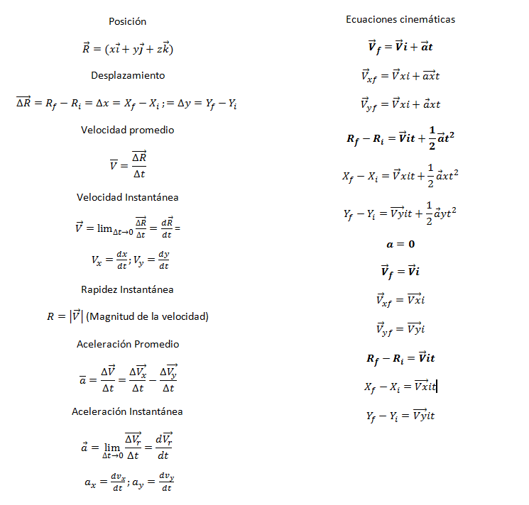
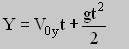

MOVIMIENTO EN DOS DIMENSIONES

El movimiento en dos dimensiones se debe a la posición de la
partícula en cada instante, se puede representar por dos coordenadas, respecto
a unos ejes de referencia. El movimiento de una partícula en dos dimensiones es
la trayectoria de la partícula en un plano (vertical, horizontal, en cualquier
otra dirección del plano).
Las variables a las que está
sometida la partícula son dos y por eso se le denomina movimiento en dos
dimensiones.
Este tipo de Movimiento se divide en dos uno
llamado Lanzamiento Horizontal y el otro llamado Lanzamiento Inclinado o de
Proyectiles.
En el lanzamiento Horizontal, el cuerpo realiza una
trayectoria semi-parabólica y el lanzamiento
Inclinado se considera a un proyectil, el cual es un objeto donde la única
fuerza que actúa sobre él es la gravedad, realizando una trayectoria
parabólica.

Identificar el movimiento en dos dimensiones y la
independencia de sus vectores. Un objeto que se lanza al espacio sin fuerza de
propulsión propia recibe el nombre de proyectil. Si se desprecia la
resistencia ejercida por el aire, la única fuerza que actúa sobre el proyectil
es su peso, que hace que su trayectoria se desvíe de la línea recta.
En este tipo de movimiento se lanza el proyectil con todo el impulso
en dirección vertical por lo cual la Vx =V0 y la Vy = 0.
Estas son las fórmulas que
vamos a utilizar:

EJEMPLO
Tomando en cuenta la figura anterior. Explicaremos
el siguiente problema:
Desde lo alto de un
acantilado de 5 m de alto se lanza horizontalmente una piedra con velocidad
inicial de 20 m/s. ¿A qué distancia horizontal de la base del acantilado choca
la piedra?
Paso No. 1: Calcular las componentes
rectangulares de la velocidad inicial
En el lanzamiento horizontal
la velocidad inicial vertical (Voy) es igual a cero, por lo que:
Vx = 20 m/s
Voy = 0
Paso No. 2: Anotar los datos
para X y para Y. Recuerde que las velocidades y los desplazamientos
|
Para “X” |
Para “Y” |
|
Vx = 20 m/s t = X = |
Voy = 0 g= -9.81
m/s2 Y = -5 m |
Paso No. 3: Selección de las
ecuaciones a utilizar
Recuerde que “X” que es la
distancia horizontal que recorre un proyectil y para calcularla es necesario saber
el valor de t (tiempo). Observe que en “Y” tiene datos suficientes para
calcular “t”.

Paso 4: Resolver la ecuación
considerando que Voy = 0, por lo que el primer término se anula.
Y= gt^2 / 2
Resolviendo para “ t “ :
t = 1.009637 s
Calculo de “ t “ :

Paso5: Calcular
“ X “ utilizando la ecuación:

Recuerde que “X” que es la
distancia horizontal que recorre un proyectil y para calcularla es necesario
saber el valor de t (tiempo). Observe que en “Y” tiene datos suficientes para
calcular “t”.
Resolviendo
para “X “:
X=Vx (t)
X = (20 m/s)(1.09637s)
X = 20 m